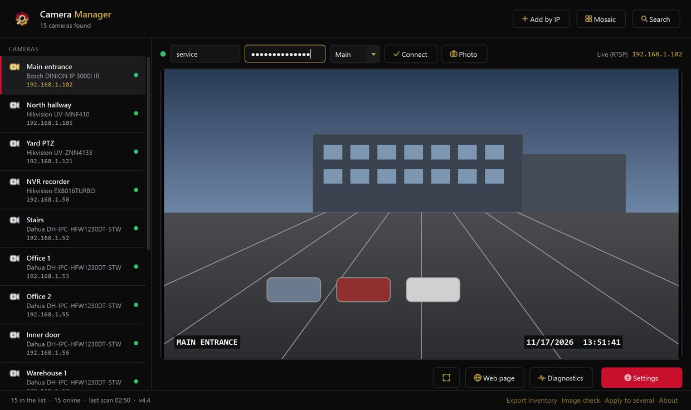
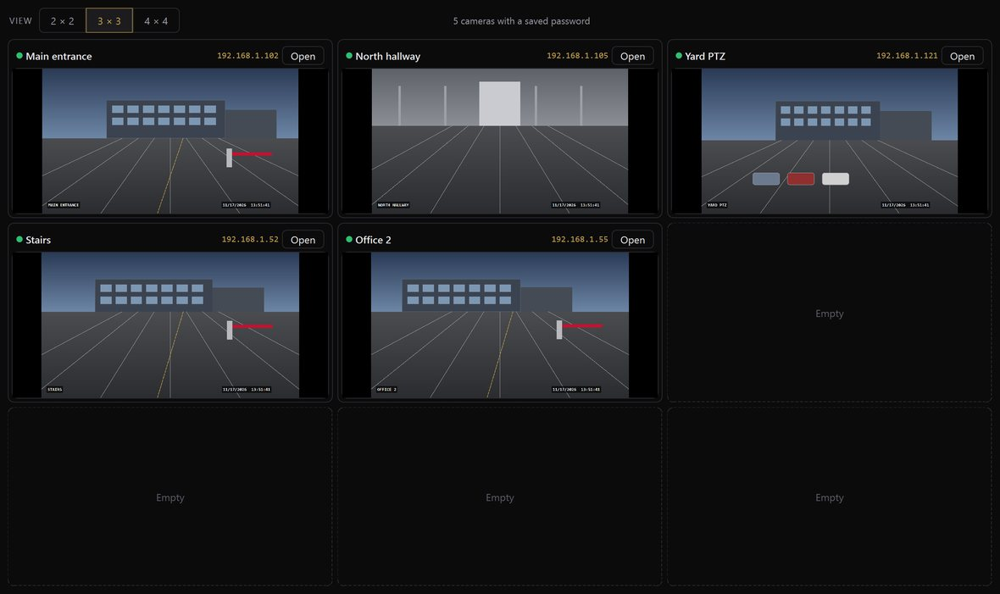
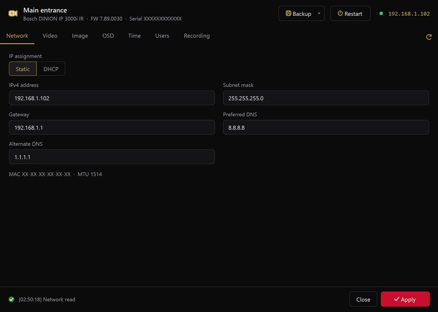
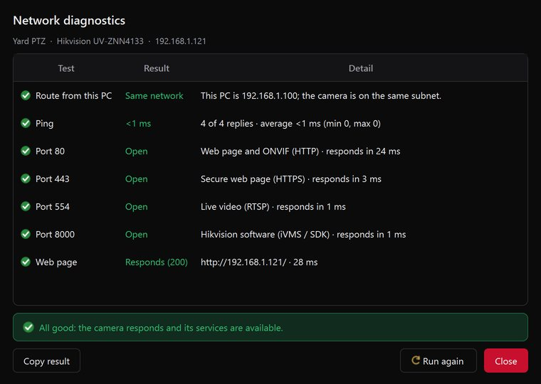
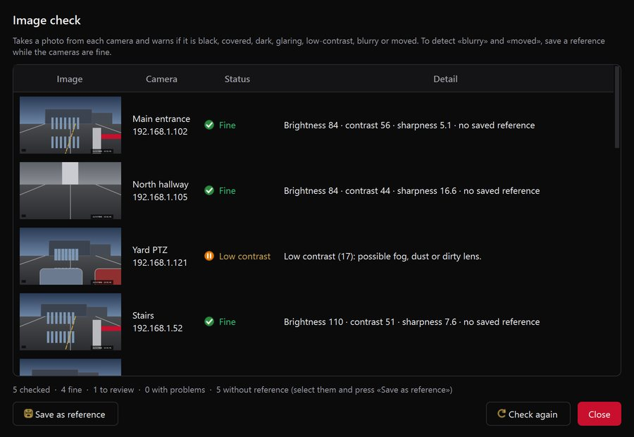

Watch them all at once.
Open a 2×2, 3×3 or 4×4 mosaic with all your cameras live, or a single one full screen with up to 8× digital zoom.
- Smooth, low-latency video
- PTZ and wiper control
- One-click photos
Camera Manager finds the cameras on your network by itself, lets you watch them live and configure them without opening each one's web page.

Open a 2×2, 3×3 or 4×4 mosaic with all your cameras live, or a single one full screen with up to 8× digital zoom.

Network, video, image, on-screen text, time and recording, all from one place and with the options each camera supports.

Diagnostics checks the camera's route, ping and ports and tells you the most likely cause in one sentence: no power, no cable, another IP or a firewall.

Image check takes a photo from every camera and warns if any is black, covered, dark, blurry or if its view changed compared to the reference.

Built for technicians who manage many cameras.
Free. No sign-up.
Open the .msi file and accept the administrator prompt. If Windows shows «Windows protected your PC», click More info → Run anyway.
Camera Manager is free and I will keep improving it. If you find it useful, you can support its development with any amount you like.